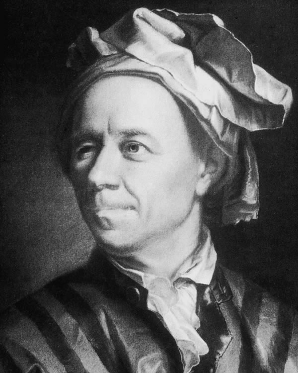
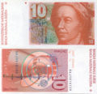
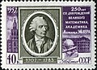
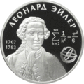
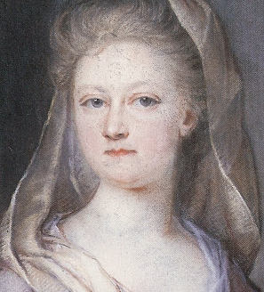

Основная информация

Леонард Эйлер родился (15 апреля 1707 — 7 (18) сентября 1783) — швейцарский, прусский и российский математик и механик. Он внёс фундаментальный вклад в развитие этих наук, а также физики, астрономии и ряда прикладных наук.
Эйлер — автор более чем 850 работ по математическому анализу, дифференциальной геометрии, теории чисел
А также он работал по приближённым вычислениям, небесной механике, математической физике, оптике, баллистике, кораблестроению, теории музыки и другим областям.
Эйлер изучал медицину, химию, ботанику, воздухоплавание, множество европейских и древних языков.
Этот учёный был академиком Петербургской, Берлинской, Туринской, Лиссабонской и Базельской академий наук, иностранным членом Парижской академии наук.
Почти полжизни провёл в России, где внёс существенный вклад в становление российской науки.
В 1726 году приглашён работать в Санкт-Петербург, куда переехал годом позже.
С 1726 по 1741 год, а также с 1766 года был академиком Петербургской академии наук (будучи сначала адъюнктом, а с 1731 года — профессором).
в 1741—1766 годах работал в Берлине (оставаясь одновременно почётным членом Петербургской академии).
Уже через год пребывания в России хорошо знал русский язык и часть своих сочинений (особенно учебники) публиковал на русском.
Первые русские академики-математики (С. К. Котельников) и астрономы (С. Я. Румовский) были учениками Эйлера.
В Санкт-Петербурге жил по адресу : Николаевская набережная , 15; (10 Линия Васильевского острова Дом 1/ Кадетский пер. Дом.6)
Детство Эйлера
Леонард Эйлер родился в 1707 году в семье базельского пастора Пауля Эйлера, друга семьи Бернулли, и Маргариты Эйлер, урождённой Брукер.Вскоре после рождения Леонарда семья переехала в селение Рихен (в часе ходьбы от Базеля), куда Пауль Эйлер был назначен пастором;
там и прошли первые годы детства мальчика. Начальное обучение Леонард получил дома под руководством отца (тот в своё время учился математике у Якоба Бернулли).
Пастор готовил старшего сына к духовной карьере, однако занимался с ним и математикой — как в качестве развлечения, так и для развития логического мышления, и Леонард рано проявил математические способности.
Когда Леонард подрос, его перевезли к бабушке в Базель, где он учился в гимназии (продолжая при этом увлечённо изучать математику).
В 1720 году способного гимназиста допустили к посещению публичных лекций в Базельском университете; там он обратил на себя внимание профессора Иоганна Бернуллимладшего брата Якоба Бернулли.
Знаменитый учёный передал одарённому подростку для изучения математические статьи, разрешив при этом для прояснения трудных мест приходить к нему домой по субботам после обеда.
Подростковая жизнь
20 октября 1720 года 13-летний Леонард Эйлер стал студентом факультета искусств Базельского университета.Но любовь к математике направила Леонарда по иному пути.
Посещая дом своего учителя, Эйлер познакомился и подружился с его сыновьями — Даниилом и Николаем, которые также, по семейной традиции, глубоко изучали математику.
8 июля 1724 года 17-летний Леонард Эйлер произнёс на латыни речь о сравнении философских воззрений Декарта и Ньютона и был удостоен учёной степени магистра искусств.
В последующие два года юный Эйлер написал несколько научных работ. Одна из них, «Диссертация по физике о звуке», была представлена на конкурс для замещения неожиданно освободившейся в Базельском университете должности профессора физики (1725).
Но, несмотря на положительный отзыв, 19-летнего Эйлера сочли слишком юным, чтобы включить в число кандидатов на профессорскую кафедру. В то время число научных вакансий в Швейцарии было совсем невелико.
Из-за этого братья Даниил и Николай Бернулли уехали в Россию, где как раз шла организация Академии наук; они обещали похлопотать там и о должности для Эйлера.
В начале зимы 1726—1727 годов Эйлер получил известие из Санкт-Петербурга: по рекомендации братьев Бернулли он приглашён на должность адъюнкта (помощника профессора) по кафедре физиологии (эту кафедру занимал Д. Бернулли) с годовым жалованьем 200 рублей (сохранилось письмо Эйлера президенту Академии Л. Л. Блюментросту от 9 ноября 1726 года с благодарностью за принятие в Академию).
Поскольку Иоганн Бернулли был известным врачом, то в России считали, что Леонард Эйлер как его лучший ученик — тоже врач.
Свой отъезд из Базеля Эйлер отложил, однако, до весны, посвятив оставшиеся месяцы серьёзному изучению медицинских наук, глубоким знанием которых он впоследствии поражал своих современников. Наконец, 5 апреля 1727 года Эйлер навсегда покинул Швейцарию, хотя швейцарское (базельское) подданство сохранил до конца жизни.
Созревший разум
Эйлер (путь которого из Базеля лежал через Любек, Ревель и Кронштадт) прибыл в Санкт-Петербург 24 мая 1727 года; за несколько дней до этого умерла императрица Екатерина I, покровительница Академии, и учёные пребывали в унынии и растерянности.Эйлеру помогли освоиться на новом месте земляки-базельцы: академики и Якоб Герман; последний, являвшийся профессором по кафедре высшей математики, доводился молодому учёному дальним родственником и оказывал ему всевозможное покровительство.
Эйлера сделали адъюнктом высшей математики (а не физиологии, как первоначально планировалось), хотя он в Петербурге проводил исследования в области гидродинамики биологических жидкостей, выделили ему жалованье 300 рублей в год и предоставили казённую квартиру.
Эйлер стал бегло говорить по-русски уже через несколько месяцев после приезда в Петербург.
В 1728 году началась публикация первого русского научного журнала «Комментарии Петербургской Академии наук» (на латинском языке). Уже второй том содержал три статьи Эйлера, и в последующие годы практически каждый выпуск академического ежегодника включал несколько новых его работ.
Всего в этом издании было опубликовано более 400 статей Эйлера.
В сентябре 1730 года закончился срок контрактов, заключённых с академиками Я. Германом (кафедра математики) и Г. Б. Бильфингером (кафедра экспериментальной и теоретической физики).
На их вакансии были утверждены соответственно Даниил Бернулли и Леонард Эйлер; последний получил увеличение жалованья до 400 рублей, а 22 января 1731 года — и официальную должность профессора.
Ещё через два года (1733) Даниил Бернулли вернулся в Швейцарию, и Эйлер, оставив кафедру физики, занял его место, став академиком и профессором высшей математики с окладом 600 рублей (впрочем, Даниил Бернулли получал вдвое больше).
27 декабря 1733 года 26-летний Леонард Эйлер женился на своей ровеснице Катарине (нем. Katharina Gsell) , дочери академического живописца Георга Гзеля (петербургского швейцарца).
Молодожёны приобрели дом на набережной Невы, где и поселились. В семье Эйлера родились 13 детей, но выжили 3 сына и 2 дочери.
Работы у молодого профессора было много: картография, всевозможные экспертизы, консультации для кораблестроителей и артиллеристов, составление учебных руководств, проектирование пожарных насосов и т. д. От него даже требовали составления гороскопов, каковой заказ Эйлер со всем возможным тактом переадресовал штатному астроному.
А. С. Пушкин приводит романтический рассказ: якобы Эйлер составил гороскоп для новорождённого Иоанна Антоновича (1740), но результат его настолько испугал, что он никому не стал его показывать и лишь после смерти несчастного царевича рассказал о нём графу К. Г. Разумовскому. Достоверность этого исторического анекдота крайне сомнительна.
За что Эйлер стал знаменит?
Описать все, что сделал этот великий человек, в рамках этого ответа невозможно. Если коротко, то : Эйлер оставил важнейшие труды по самым различным отраслям математики, механики, физики, астрономии и по ряду прикладных наук. С точки зрения математики, XVIII век — это век Эйлера. Если до него достижения в области математики были разрознены и не всегда согласованы, то Эйлер впервые увязал анализ, алгебру, тригонометрию, теорию чисел и др. дисциплины в единую систему, и добавил немало собственных открытий. Значительная часть математики преподаётся с тех пор «по Эйлеру» . Благодаря Эйлеру в математику вошли общая теория рядов, удивительная по красоте «формула Эйлера» , операция сравнения по целому модулю, полная теория непрерывных дробей, аналитический фундамент механики, многочисленные приёмы интегрирования и решения дифференциальных уравнений, число e, обозначение i для мнимой единицы, гамма-функция с её окружением и многое другое. Эйлером было положено начало всех изысканий, составляющих общую теорию чисел.Что оставили в честь Эйлера
В честь Эйлера названы:множество понятий в математике и других науках; Кратер Эйлер на Луне;
Астероид 2002 Эйлер;
Вершина пик Эйлера на Памире;
Международный математический институт им. Леонарда Эйлера Российской Академии наук, основанный в 1988 году в Ленинграде;
Золотая медаль имени Леонарда Эйлера Академии наук СССР и Российской академии наук;
Медаль Эйлера, с 1993 года ежегодно присуждаемая канадским Институтом комбинаторики и её приложений за достижения в этой области математики;
Международный благотворительный фонд поддержки математики имени Леонарда Эйлера;
Премия Правительства Санкт-Петербурга за выдающиеся научные результаты в области науки и техники: в номинации естественные и технические науки — премия им. Л. Эйлера;
сквер в Санкт-Петербурге;
Улица в Алма-Ате.
Полное собрание сочинений Эйлера, издаваемое с 1909 года Швейцарским обществом естествоиспытателей, до сих пор не завершено; планировался выпуск 75 томов, из них вышло 73:
29 томов по математике;
31 том по механике и астрономии;
13 — по физике.
Восемь дополнительных томов будут посвящены научной переписке Эйлера (свыше 3000 писем).
В 1907 году российские и многие другие учёные отметили 200-летие великого математика, а в 1957 году советская и Берлинская академии наук посвятили торжественные сессии его 250-летию. В канун 300-летия Эйлера (2007) в Петербурге состоялся международный юбилейный форум и был снят кинофильм о жизни Эйлера. В том же году в Петербурге, у входа в Международный институт Эйлера, был открыт памятник Эйлеру работы скульптора А. Г. Дёмы. Власти Петербурга, однако, отвергли все предложения назвать в честь учёного площадь или улицу; в России до сих пор нет ни одной улицы Эйлера.
В 2007 году Центробанк РФ выпустил памятную монету в ознаменование 300-летия со дня рождения Л. Эйлера. Портрет Эйлера помещался также на швейцарскую 10-франковую банкноту (6-я серия) и на почтовые марки Швейцарии, России и Германии.



Екатерина - жена Эйлера 